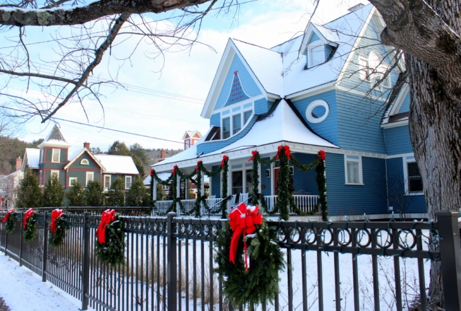
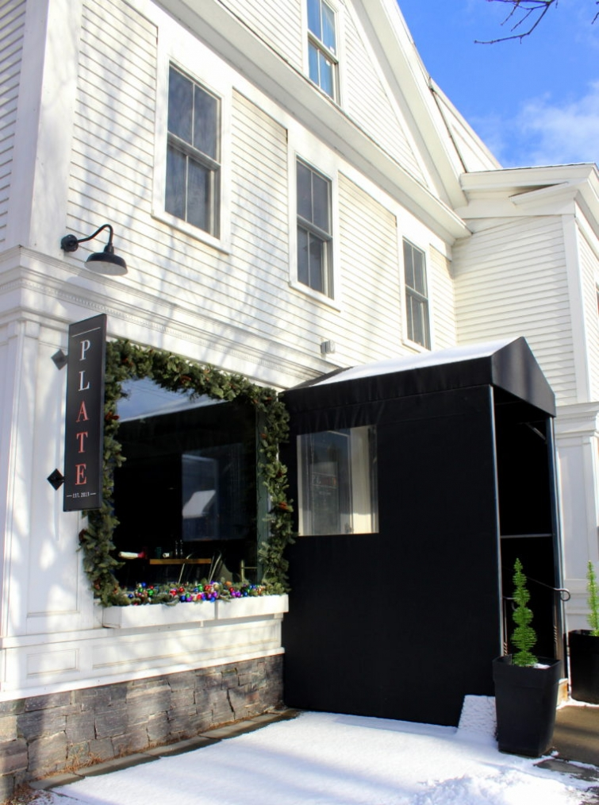

.png)
.PNG)
.PNG)
.PNG)
.PNG)
.PNG)
.JPG)
.JPG)
.PNG)
.PNG)



The town of Stowe, Vermont is a charming place any time of year, but when you add in Christmas decorations and sprinkle snow on top of it all, you get a really beautiful destination. In part 1, you saw where we stayed in Stowe at Edson Hill. So today let’s take a look at a few places we visited while we were there in December.

Our first evening’s meal was at Plate, a highly rated restaurant right in the middle of town. Neither my husband nor I had dined there before, but our son had, and he really wanted us to try it out.
It is a somewhat small restaurant, and we were lucky to get in without a reservation (but maybe all the snow kept people home on a cold night.) Here is a look at part of their winter dinner menu:

I had the cider grilled half chicken on corn bread pudding with braised greens. It was one of the best dishes I have ever had…Yes. that good. (And I am a big time beef lover!) The chicken was incredibly moist, and the corn bread pudding was delicious. Both my husband and son said their meals were excellent as well. So if you are ever in the area, I highly recommend Plate (and my chicken dish! 🙂 )

After dinner, we went back to the inn and relaxed, but the next day we drove through the snow into town.

After parking the car on Main Street, our son went over to a coffee shop so that he could study for his fall semester exams, and my husband and I headed to our first stop – Shaw’s General Store. It was founded in 1895 by Howard Shaw and has been run by the family ever since.

In true general store fashion they carry shoes, clothing, food items, home decor, and even pet supplies. I looked around a bit then left my husband in there to shop a while longer. There was another store right down the street that I had been dying to see (and I knew he wouldn’t want to spend time in there.) 🙂

I had read about The Country Store on Main when I was doing some research on Stowe. It is in the building that was occupied by Lackey’s Variety Store for almost 60 years. It closed back in 2014, and then Graham and Christina Mink and Richard and Nancy Bennum purchased the building a year later. (You can read about the interesting history of Lackey’s here.)

They remodeled the store being mindful of its historic significance yet updating it for today and then named it The Country Store on Main.

It is a delightful shop…full of everything for the kitchen, bedroom, bathroom, and even some gifts for children and pets! I could have easily spent an entire day in there. If you would like a great virtual tour of the shop, click over here , scroll down a bit, and just take a look around. 🙂 I know you will enjoy it!
After I finished shopping in there, I met up with my husband again, and we strolled around town looking at the pretty buildings and the Christmas decorations.

This is the Stowe Community Church, one of the first non-denominational churches in the United States.


After going in several more shops, we ended up here at the old depot building.

The upstairs has a little cafe, a neat bookshop, and a couple other gift shops, and the downstairs has…

Stowe Mercantile!
This is the epitome of what I think a Vermont general store should be. They have everything!
Candies…food….
(a piano!)

souvenirs…housewares…clothing…
(a place to play checkers)

a photo booth and even a ski lift!
The Mercantile meandered all through the lower level, and it was a fun place to shop. (My husband and I even hopped in the photo booth for some silly pictures. 🙂 )
It was getting late for lunch so we met up with our son at the coffee shop, hopped back in the car, and drove a short distance to our lunch stop – Doc Pond’s, a popular restaurant and bar. (Craft beers are BIG in Vermont.)
As you enter the restaurant you see this display of turntables and old records. It certainly gives you a clue to the fun vibe of the place!

And here is a look at their menu for lunch.

I believe my husband and I both had the burger, and our son ordered the daily special that was not listed on the menu. Every dish was well prepared and tasty, and the servers were all friendly…making it a wonderful place for lunch. We would have eaten there again if we had been in Stowe longer. Our favorite dish we shared was the VT cheddar fritters with jalapenos and a cream sauce. We could have eaten our weight in those babies!!

After lunch we drove back towards Edson Hill Inn. There’s a place you need to make a stop at any time of year but most definitely at Christmas….Laughing Moon Chocolates.
Of course they have delectable chocolates, but the reason to go during the holidays is because they make these:
Yes, candy canes! They are available in several flavors but only during the Christmas season. If you happen to be in there on certain days, they are doing candy cane making demonstrations and you can make your own! (Details here.) Here is a video clip if you would like to see more from the shop.
Another place that is a must-see in Stowe, a little further down the road, is Stowe Kitchen, Bath, and Linens. I made a short video tour on my phone to show you. Fingers crossed you will be able to see it! (The audio is the Christmas music that was playing in the store. 🙂 )
And now here are a few photos from their Facebook page.

The place is huge! If you like things for your kitchen, your bath, or your bedroom (which I know you do 🙂 ) then you will absolutely love this shop! The upstairs is for linens, and the downstairs has all the kitchen and bath things along with gift items and even a small section of clothing.

Most things in the store are not ski related, but these just happen to be some of the cute things they carry that are.
Now on to our next stop. If you have been reading here a very long time, you may remember my bucket list item to go on a “one horse open sleigh ride” preferably in Vermont during the Christmas season. (Details here.)
The week before we left for this trip, my husband called Gentle Giants there in Stowe to find out if they still offered sleigh rides, if we needed reservations, what the cost would be, etc. He was told that at that point they were only doing carriage rides because they did not have enough snow for the sleigh rides. They needed a minimum of 4 inches to be able to offer that but to check back in with them when we got to Stowe. So after we left the kitchen shop, we drove to Gentle Giants. (It was not very far from the turn off to our inn.)

It was snowing at that point, but there was not quite 4 inches of snow on the ground yet. We saw covered sleighs, open carriages, and horses that were eating….

But there were no people around. We waited quite a while (in the freezing cold!) We tried calling them, but no one answered or showed up. So I did not get that bucket-list-sleigh-ride. 🙁 We considered going back the next morning, but that was when the weather forecast issued a severe winter storm warning with 14 inches of incoming snow and wind chill temps in the single digits. I don’t think we would have really enjoyed being out in THAT weather! So the one horse open sleigh ride is still on my bucket list, and that gives us another reason to return to Vermont at Christmas, right? 🙂
And now there is one last restaurant I want to share with you before part 2 is finished. Our final evening meal in Stowe was at Harrison’s Restaurant. (It was way too dark to photograph, so these are from online sites.)

To find Harrison’s is not very easy…down some stairs off Main Street. It is totally underground. And it is teeny tiny…like only 14 tables tiny! So you really really need reservations. But we got lucky! There was immediate seating for our group of 3 in the bar area at a small hightop booth/table, and we happily took it. 🙂

You can see their menu here. I had the Chicken Piccata which was very good. My husband had their venison steak…also tasty, and our son had chicken confit and gnocchi which he thought was great.
This is the venison dish.

All in all, a wonderful meal in a very cozy atmosphere. But, I will say that if I had to choose between dinner at Plate or dinner at Harrison’s I would choose Plate. (But both places had delicious food. 🙂 )
And with that, we come to the end of this part of our trip. I do need to tell you though that Stowe is better known as a skier’s paradise. We did not have time for skiing on this trip, but if you want to do that on a visit there, you can find plenty of information about it here.
Part 3 (yes Kathy, there is a part 3!) from our trip to Vermont is coming up next, and I will be sharing details about our drive (our scary drive in the snowstorm!) and our next stop in a quintessential Vermont town. Hope you will be back for it!

Until next time…


.PNG)
OMGoodness! How beautiful and I am so excited for a Part 3! It is funny that almost every time I visit my parents (no Internet) you have a post and I am so, so excited to get home to read it. I have to read YOUR post on the “big screen”… not my tiny iphone! LOL! As I was reading I thought that DiAnne would HAVE to go here and LOVED reading her comments. (She actually took our daughter with her back when she went to Canada and New England…such a wonderful gift!) All of the shops and all of the food looked fabulous! I am sorry you didn’t get your sleigh ride but that will certainly give you a reason to go back! I love that you mentioned the piano. Every time my mom goes to a place with a piano, she sits down and plays it…by ear, of course…at 84 years old! Also, whenever I go to a really cool restaurant now I think…What would Kelly take a photo of! And, I take the photos and send them to Katrina. I can’t wait for Part 3! You go, girl!!!
Oh I can’t wait for the third part of your trip! Reading these posts really does make me want to visit soon! I loved the Country Store and the other shops as well. Sounds like you really had an awesome getaway!
Kelly: You have definitely made me want to visit this town. soon! I know that you will love the sleigh ride; Mike and I have done a couple of them (one at night the other in the morning) and both were spectacular.
As always, this post was packed with helpful information and beautiful pictures.
Cindy
I loved this post and the preceding one! We live right next door in New Hampshire, but these posts have given me some good ideas regarding getaways in Vermont! As always, your pictures are fabulous!
So beautiful!I must say your blog is beautifully done and such a refreshing change from some blogs that bombard you with ads. I know this “ad free” zone was a decision you made a year or so ago and it was the RIGHT decision. Thank you! I enjoy it so much!!
kelly,
What a fun post! Everything about it was a fun read. Loved the food, the shops, and the scenery.
I have to tell you something funny about me. I LOVE going to ski resorts but I am not wild about skiing. There is just something about going to places where there is lots of snow, great food, and fireplaces. I just don’t like heights and speed and putting those two together is not for me. I know how to ski and can and have had more than my share of lessons but zooming down a mountain thinking someone behind me is sure to slam into me is not for me. However, I could sit in a lodge with my cocoa and watch other people ski all day long. Those pillows with ski themes are sooooo cute.
The other sunny thing about me is I have been to every New England state EXCEPT Vermont! How did that happen! About 15 years ago we did a big road trip and did a big loop up into Canada and somehow we didn’t make it to Vermont. It was the first time my husband had ever taken two weeks off work and we just didn’t make it to Vermont. After reading your posts I have to go.
Looking forward with Kathy and Katrina to the third post.
DiAnne
Thank you sooo much for this Kelly! Lovely to see Stowe covered in snow. You’ve rekindled so many happy memories for me of our summer visit there. I wandered in many of the same shops. Watched fireworks on Independence Day, standing by the church. We also ate at Plate and Harrison’s and I totally agree with you re the quality of the food!
Sorry that you weren’t able to take a Sleigh Ride but then again always good to have a reason to return! I’m wishing, very hard! ☺ that I may get to visit in the winter one year.
Take care Kelly, hope you’re having a good week.
Rosemary
Hi Kelly,
I am new to your blog and am really enjoying it! I love to travel and your pictures and comments make me feel like I’m there! I love the same things you do and the shops you go to. A sleigh ride in New England is on my list, too! 🙂 Keep the great posts coming. I can’t wait for part 3!
Loved getting a peek of the different stores on your shopping trip; one reminded me of Mast General Stores which I love! The pictures and descriptions of food were fantastic too! Can’t wait until I get to take a trip to some of these places!
What a fun shopping and dining trip! Thanks so much for taking me along! Sorry you didn’t get that sleigh ride, but yes, you’ll have to just go back again! That last photo of your drive reminded me of the one we took when my daughter was having our first grandbaby. They lived three hours away then, and we made a scary drive through an almost blinding snowstorm to be there. Then we ended up spending another 9 hours waiting for that baby! So glad he came after we got there, but it was a long labor for my daughter, and I was kinda mad they made her go through that. He’s now a lanky 11 year old, and I always think of his approach into the world during a snowstorm, just like his Mom did when she was born!
I just love your blog and I know I have told you that before but all the info you give on your trips and the wonderful pictures is great and makes planning a trip easy. The Chamber of Commerce should hire you.
Such a great tour! Thanks!
Your blog is one of my favorites. I love your choice of decorating your home and really enjoy the blogs posts about the trips you take.
Hi Kelly. I enjoy your blog, seeing your beautiful home and all your traveling adventures! When I saw that you just visited Stowe I just had to comment! We live in NH so we’re used to seeing beautiful New England towns but nothing surpasses Stowe! I grew up visiting there as a child and now my husband, daughter and I visit there summer fall and winter. I’ve seen many store changes in my years on Main st. But visiting Stowe never gets old! Riding the bike path, driving up the Toll House auto road, the British Invasion car show in Sept. , the hot air balloon festival in July are a must do! There’s too many to mention! Can you tell we love Stowe too?
————————————————————————-
Yes, I can definitely tell you love Stowe. LOL It was a fun place to visit for sure. A hot air balloon festival would be gorgeous to see there! I hope we get to visit there again in the fall with all the beautifully colored leaves.
Thanks for commenting Kerry!
Kelly
Oh I am just sappy with all these wonderful pictures, stores, food and snow! It was wonderful! Just wish you had gotten your sleigh ride— next time for sure!! You have made my evening and wondering about part 3? And the scary part – oh dear!:( We are looking forward to FL weather this week— in the 20’s was a bit too cold for me!! Did love that you got a dusting of snow— looked so pretty with your outside Winter decorations!! 💕❄️🙏❄️❤️❄️💕⛄️
——————————————————————-
Well Louvina I am happy that you enjoyed the post so much! Yes, I wish we could have done that sleigh ride too, but we will get it eventually. We crammed a lot in this trip as it was.
This weather has been crazy hasn’t it?? 20’s in Florida was VERY crazy! Tomorrow is going to be so warm we are taking the canoe out on a nearby lake. And it was less than a week ago we were looking at that dusting of snow outside!
Kelly
What a beautiful trip…thanks for sharing. Love all the beautiful photo…I wanna go shopping!! and have lunch.
——————————————————————–
Thanks Bev! Shopping and lunch in Stowe makes for a great day! 🙂
Kelly
Happy New Year, Kelly! I’m so happy you enjoyed this wonderful trip! I am sure enjoying it with you, and am looking forward to Part 3! I love the stores you highlighted today. A few years ago, we went to Cooperstown for the Baseball Hall of Fame induction ceremony; it was the year our 3 Braves were inducted. I had never been to Vermont and had always wanted to go, so one morning we went to the Vermont Country Store in Weston and I absolutely loved it! Our 25th anniversary is in 2019 and we have tentative plans to go back, so I’m pinning all the great places you share! Thank you!
——————————————————————–
What a great way to celebrate your big anniversary Renee! I know that will be a good trip, and I am so glad I can provide some inspiration for you. Glad you are enjoying the posts!
Kelly
i loved your trip i just stayed at edson hill in at the end of september and i cant wait to go back. the grounds are absolutely gorgeous the food is fabulous and the property managers are darling. i would go back again and again. i spoke to 2 gals frome NY who were staying at the supposed #1 rated hotel who had come there for dinner and they were so impressed and wanted to switch hotels. i loved seeing it with snow. i cant wait to go back. thank you so very much for sharing i loved that we went to a lot of the same places😙 you always capture things so beautifully.
———————————————————————
I’m so glad you have gotten to experience and enjoy Edson Hill too! We would go back again and again as well! It was gorgeous in the snow, but I hope we get to see it in the fall one year. That’s next on my list. 🙂
Thank you for your kind words about the post!
Kelly
What awesome pictures! Looks like a winter wonderland! The food looks yummy too. I do hate you didn’t get to go on your sleigh ride but now you have a fun excuse to go back.
I love that this trip was a gift! The best kind of gift ever …. one that will live on in your memory! (and honestly at this point in our lives, who needs more stuff…. haha)
Kathy will be so happy there is more to come ( and so am I).
———————————————————————
Thanks Katrina! It was a winter wonderland everywhere we looked. Yes, it was a WONDERFUL gift, and you are so right about not needing more stuff! I need to have another yard sale!
Kelly